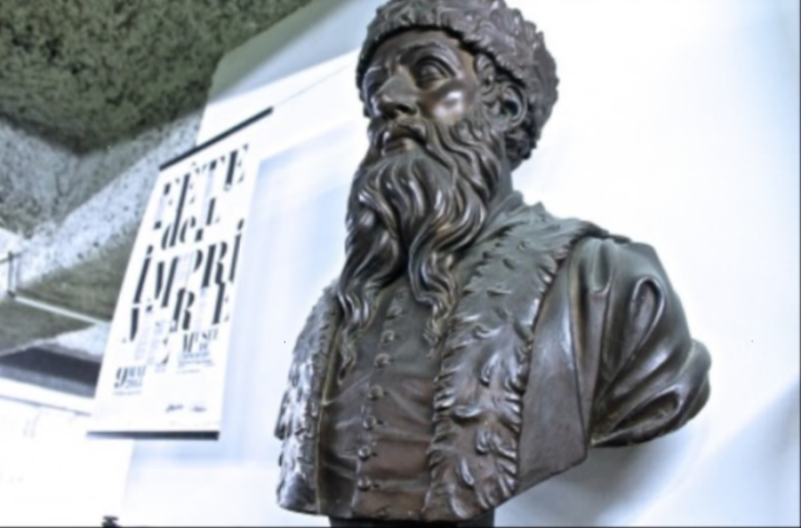

Nous Découvrir...
Notre Histoire :
Tout naturellement, l’idée de préserver ce qui fut cinq cents ans de communication de la pensée, germa dans l' esprit de deux hommes, Sylvain Chiffoleau, maître-imprimeur et Robert Colombeau, compositeur typographe, relayés en cela par les municipalités successives. Une solide équipe de professionnels de l’imprimerie, toutes spécialités confondues, où chacun se reconnaîtra, œuvra des semaines durant pour que le projet prenne corps. C’est ainsi que le 6 décembre 1986 le Musée municipal de l’imprimerie ouvrit ses portes.
À juste titre, la ville de Nantes peut s’enorgueillir deposséder à ce jour, un lieu unique en Europe, véritable conservatoire des techniques anciennes et de leurs traditions, transmises avec amour par un personnel passionné et hautement qualifié.
Le fil conducteur qui permit de réunir les collections présentées dans les différents ateliers, de la fabrication du papier en passant par la composition et l’impression du texte et de ses illustrations pour aboutir à la reliure-dorure.
« Ensemble indissociable, le Musée de l’imprimerie de Nantes couvre les domaines culturel et artistique, historique et patrimonial, éducatif et pédagogique, social et citoyen. Il s’adresse à tous les âges et à toutes les couches de la population. »
Nos Partenaires :
La ville de NantesDepuis 1986 date de la création du Musée de l’imprimerie, la Ville de Nantes soutient l’association Pro arte graphica, organisme gestionnaire du musée de l’imprimerie à travers des subventions et la mise à disposition de locaux d’environ 700 m² dans l’immeuble de la Médiathèque.
Le centre de formation a été créé en 1926 par la Chambre syndicale des maîtres imprimeurs de la Loire-Inférieure. Il met à disposition des personnes et des entreprises, un ensemble de moyens humains et matériels permettant la formation des différents acteurs de la chaîne graphique. Les jeunes sont formés par la voie de l’apprentissage en partenariat avec les entreprises, dans la spécialité de leur choix et à différents niveaux. Les salariés et des entreprises et les demandeurs d’emploi ont accès à des stages spécifiques, adaptés à leurs besoins, et organisés dans le cadre de la formation continue.
Association pour les arts graphiques en vallée de ClissonL’association Pour les arts graphiques en vallée de Clisson a été créée en 1997 à l’initiative de Pro arte graphica qui gère le Musée de l’imprimerie de Nantes. Son existence y est intimement liée et elle en constitue le complément indispensable pour parler du monde du papier dans sa totalité, depuis l’élaboration du support jusqu’à ses utilisations. Elle regroupe des animateurs provenant pour la plupart des métiers de la communication, du papier, de l’imprimerie et de l’image. Nous vous invitons à venir découvrir ses activités, ainsi que le projet de restauration du moulin à papier du Liveau à Gorge.
Société des amis du muséeEntièrement autonome elle a été créée en 1999 pour fédérer la profession autour du Musée par des actions de promotion et de soutien et recruter des adhérents individuels. Les cotisations recueillies permettent d’acquérir certains matériels et d’enrichir ses collections. Elle organise des visites d’entreprises ou de sites particuliers, au moins deux fois l’an. C’est l’occasion pour les adhérents de mieux se connaître et de se retrouver dans des sorties conviviales.
Musée Atelier de l'Imprimerie de Nantes
24 Quai de la Fosse 44000 Nantes


Comment y aller ?
Arrêt médiathèque sur la ligne 1
Parking Médiathèque, Gloriette,
petite Hollande (payant)
Appelez-nous
02 40 73 26 55
Envoyez-nous un mail
info@musee-imprimerie.com